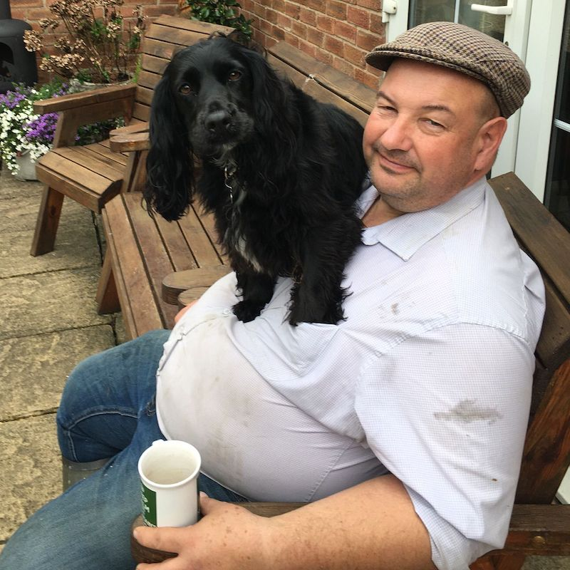
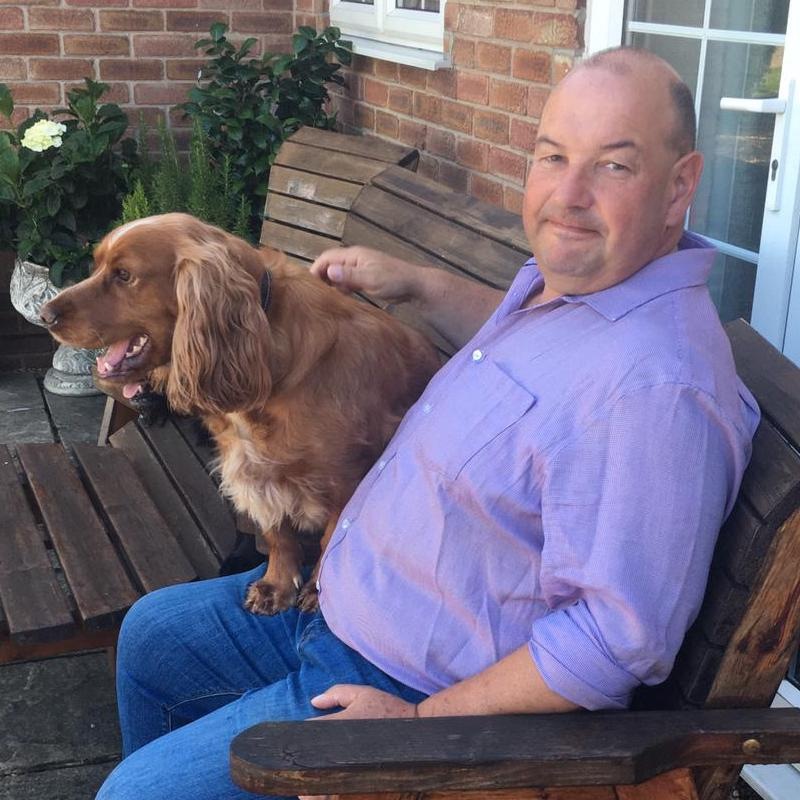

I’ve been there, it sucks – I know!
I’m here to share with you everything I have learnt in my journey to a happier and healthier life.
At 35, I was diagnosed with high blood pressure. Nearly 10 years on, I’m lean, strong, sleep well, and no longer require any medications.
Between then, my weight yo-yo’d significantly. As did my mental health. Life only started to improve when I made a decision – to ask for help.
My own use of health and wellness coaches has proven that having this structure in place can significantly accelerate your results.
My coaching is based on research and experience. I learnt what works (and what doesn’t) through years of trial and error. You can avoid my mistakes.
I can guide you around crazy health myths and misinformation. I’ve tried all the fad-diets, life-hacks and expensive supplements – you don’t need to.
Over just 90 days, I’ll share with you what I’ve refined into an easily sustainable lifestyle. And yes, that means treats are allowed!
Join my initial transformation programme, and you’ll get:
Plus, if you follow my coaching, I guarantee you’ll lose 15lbs of fat over the 90 days. Minimum.
You’ll complete the programme equipped with the knowledge and skills to maintain a healthy lifestyle, and the mindset to stick to it.
All for just £269 per 30 days.
After completing the programme, you’ll have the option of a monthly plan – providing support, accountability and optimisation of your ongoing progress.
We’ll agree a further programme together, either a continuation of group coaching, or a personalised one-to-one accelerator course.
I’ll then guide you through further topics, reinforcing and enhancing your mindset and habits, resulting in an ever-healthier lifestyle.
I’m also studying for a nutritional qualification on more advanced/specific topics, to ensure I give you the absolute best advice.
Changing your lifestyle isn’t easy, but my job is to help make it simple and manageable.
It requires commitment, honesty and being open to feedback. And of course, making time (4–6 hours/week) to participate fully in the programme.
Don’t worry about support from difficult family members, I’ve tips for getting them on your side!
And, while entirely optional, I recommend a few products and services to boost your results. If you decide to buy them all, they total around £150 during the initial transformation programme.
While appreciating that these are difficult times, and without wishing to scaremonger, you’re going to spend the money anyway.
Your choice is whether to be proactive and do something positive for yourself, enjoy being able to play with the children in your family, and so on.
Or, sleepwalk (like I was) into wasting time with GP visits, spending money on hospital parking and prescriptions etc.
Brilliant! There’s never a perfect time. Life always gets in the way, doesn’t it?
However, learning the skills to navigate around difficult times only strengthens making changes a lifestyle choice.
Day one, or one day – you decide!
We’ll start with a (free, no-obligation) video call, so I can understand where you’re at, and we can decide whether we think we can work together.
If you decide to commit to the programme, we’ll get started with a couple of preparation steps before my next intake date – and then you’re off!
I’ll next be coaching new clients on 3 March 2025.
I’m ready to join the Yoke waiting list
“On an absolutely fantastic journey that just gets better and better. 3st lost in 5 months, feel totally different, not only physically but mentally too.
Wes is a great coach, he transfers his extensive knowledge and personal experience in structured, easy to understand sessions and has taken a real interest in my personal journey – with regular contact and support outside the sessions. Incredibly educational, and because it all makes sense and produces results you just want more. The food suggestions are amazing and right up my street, not once have I felt I am punishing myself – food shopping is way more fun.
I’ve now started with a personal trainer to work alongside and improve fitness. The combination of Wes’ dietary and psychological knowledge/experience and Jane’s physical training programme, coupled with their willingness to work together for the benefit of me is awesome.
The icing on the cake is the endless positive comments from those who are witnessing the change and asking, 'How are you doing it?'”
 